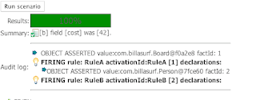

While everyone was having fun at ORF… (some of us got some work done !)
I (Michael) was not able to travel to texas for the meetup, due to an imminent addition to the family.
However, with the wonders of 2003 technology I was able to “attend” in a sense – Skype and Elluminate (skype had nicest voice quality – at least to my ears).
Just a quick update of some new features that fell out of some work that happened during ORF/rule meetup:
Jeff Delong requested that the Scenario runner be able to show an “audit log” of events (tracing the execution of the rules – this is similar to what you can do in the IDE using the logging event listener and the plugin. This was relatively easy to to:

Michael from Franklin American was at the rules meetup, and contributed a feature called “category rules” (more details on this in future) – it is a really clever idea: you specify that rules tagged in a certain category “extend” a specified rule. Before he could do this he had to add the “extends” feature to rules – so a rule can extend another rule (it “inherits” the conditional part – just single inheritance – very simple !).
(excuse my random keyboard-mashing names – unseasonal cold weather has locked up my joints for typing !). This is quite a neat idea – you could use it to simplify rule authoring so that the mere fact that a rule belongs in a certain category implicitly applies extra filtering constraints to it (that was the case Michael had in mind, I am sure he will provide a more concrete example in the future).
Also, Joe of Recondotech contributed an enhancement to DSL’s to allow drop downs, dates and such to be configured in a DSL and an editor rendered accordingly – which provides a more user friendly way of building form-style UIs for business users.

{kind=link}
{kind=link}